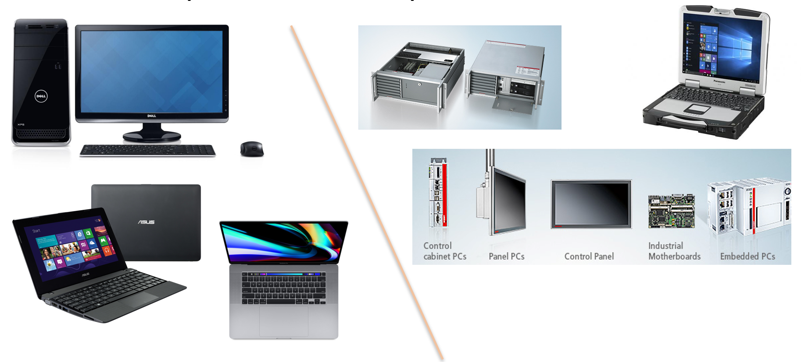

De personal computer heeft een ongeëvenaard succesverhaal achter de rug en is een onderdeel geworden van het dagelijks leven.
Ook in de industrie worden computers heel vaak gebruikt voor diverse automatiseringstaken. In een industriële omgeving spreekt men dan over een industriële computer, industriële pc of kortweg IPC.
De hardware en vormfactoren die gebruikt worden voor industriële computers zijn héél divers en hangen af van de taak waarvoor de computer ingezet wordt. Hier gaan we straks iets dieper op in.

Wat de processor betreft begint dit onderaan het segment bij ARM of Intel Atom x86 varianten. Doordat deze processoren weinig warmte ontwikkelen is er dan vaak geen ventilator nodig. We spreken dan van een passief gekoeld systeem. Dit zorgt ervoor dat ze ingezet kunnen worden in omgevingen met heel veel stof.
Wanneer prestaties belangrijk zijn kan er gekozen worden voor Intel Core 3, 5 of zelfs 7 processoren. Het type processor bepaalt ook onmiddellijk welke applicaties kunnen gedraaid worden.
Dat type is daarbij niet het typenummer maar de instructieset: de verzameling instructies die de processor begrijpt. Een Atom, een Core en een Ryzen delen dezelfde instructieset, x86 en in zijn 64 bit vorm x64, en draaien dus dezelfde programma's. Een ARM processor heeft een andere instructieset. Een programma dat voor x64 vertaald is, start daar niet op, dus wie van x64 naar ARM gaat heeft van elk programma een versie voor ARM nodig.
Bij personal computers heeft een consument ook de keuze om een processor te kopen van AMD. Deze doen net hetzelfde als een Intel processor maar zijn doorgaans iets goedkoper. Toch wordt in de industrie bijna altijd gekozen voor Intel.
Een tweede criterium is de vormfactor van het moederbord. Deze gaat van ATX tot computers die passen op een DIN rail. ATX staat voor Advanced Technology Extended en heeft ongeveer de afmetingen van een A4 formaat papier.
Een derde criterium is het scherm waarop de GUI of Graphical User Interface wordt getoond. In de industrie worden heel vaak touchscreens gebruikt. Hierbij speelt natuurlijk de grootte een rol maar ook als dit scherm drukgevoelig is of capacitief.
Een vierde criterium is natuurlijk ook het besturingssysteem en bijhorende software. Vaak wordt gekozen voor Windows 7 Compact / Embedded of de opvolger: Windows 11 IoT Long Term Servicing Channel. Dit is de speciale variant van Windows 11 bedoeld voor industriële toepassingen.
De programmatie van een industriële PC kan bijgevolg met om het even wat je kan bedenken: Visual Basic, C#, Java, ... Vaak wordt de industriële PC gebruikt als een software PLC of kortweg SOFT PLC.
De programmatie daarvan gebeurt dan aan de hand van gespecialiseerde software zoals bijvoorbeeld TwinCAT of CODESYS. Deze zorgt ervoor dat de computer zich gedraagt als een PLC met als toegevoegde bonus de mogelijkheid tot een complexe gebruikersinterface.
Een PLC stuurt IO aan: ingangen die een sensor uitlezen en uitgangen die een klep of een motor schakelen. Op het moederbord van een industriele computer zitten die aansluitingen meestal niet. Ze zitten op een apart toestel dat bij de machine staat, een IO eiland, en de computer bereikt dat over het netwerk. Daarvoor dient een industrieel netwerkprotocol zoals PROFINET, Modbus TCP, EtherNet/IP of EtherCAT: het brengt de toestand van elke ingang naar de computer, en het commando voor elke uitgang terug naar het eiland.
Wanneer je de hardware van een IPC of embedded system bekijkt dan zie je dat deze vaak niet spectaculair vooruitstrevend is. Een vorige generatie RAM geheugen, harde schijf en processor zijn geen uitzonderingen. Dit komt omdat er vaak voor hardware gekozen wordt waarvan de ondersteuning en beschikbaarheid nog lang in de toekomst gegarandeerd worden door de fabrikant.
Als je een IPC of embedded system koopt dan krijg je er vaak de garantie bij dat je na 10 jaar nog steeds vervangonderdelen ervoor kan krijgen.